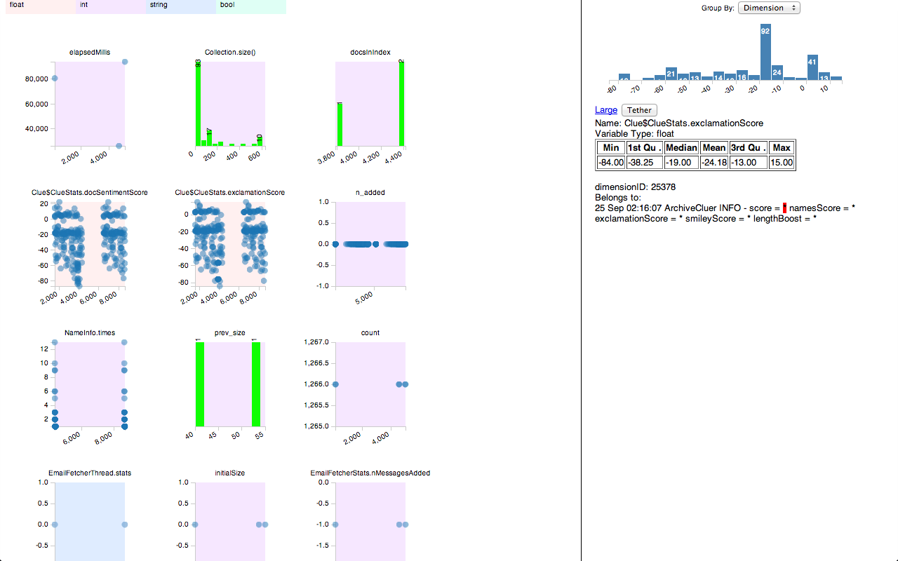

Seaview
Guide: Dr. Sudheendra Hangal.
Seaview is a log file visualization software. Log files can grow very big in size and finding faults or anomalies from the log is often a painful process; Seaview eases this process by adding semantics to the log based on the information on units and dimensions of the variables dumped into the log.
The tool depends on Unifi software to infer the units and dimensions of the program variables and instruments the bytecode of the log generating java program.
With the aid of Unifi, Seaview will have a deeper sense of the log file that will enable various summarizations on the log as listed below.
-
Visualise a colored log file, colored according to the dimension or unit of the variable.
-
Visualise summary of the variables that are grouped on variable or dimension or unit.
-
Filter and group the log lines based on variable or dimension or unit.
-
Browse the code by clicking on the variables.
The features will ease the analysis of the log files and hopefully subside to some extent the pain of debugging and ensuring program correctness. Further information regarding the software can be found here
Catch a live demo here, use the demo with the test log that can be found here.
Snapshots

|

|

|
Libraries used for Seaview:
Slickgrid, d3.js, syntaxhighlighter, zip.js, jquery.